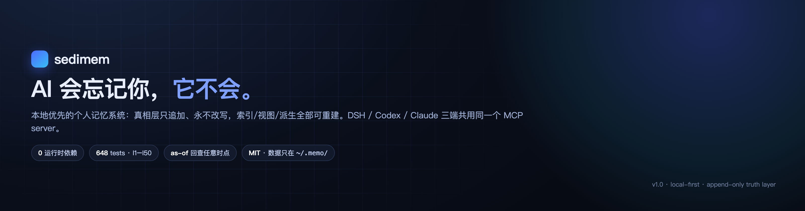
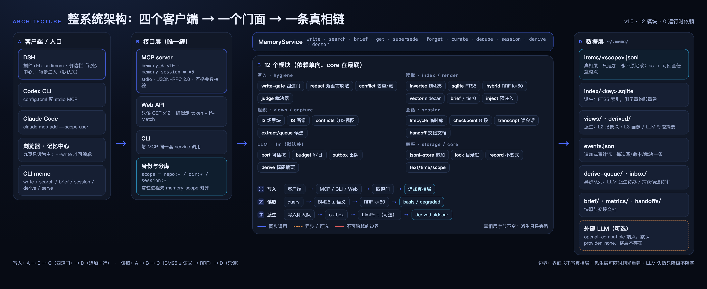
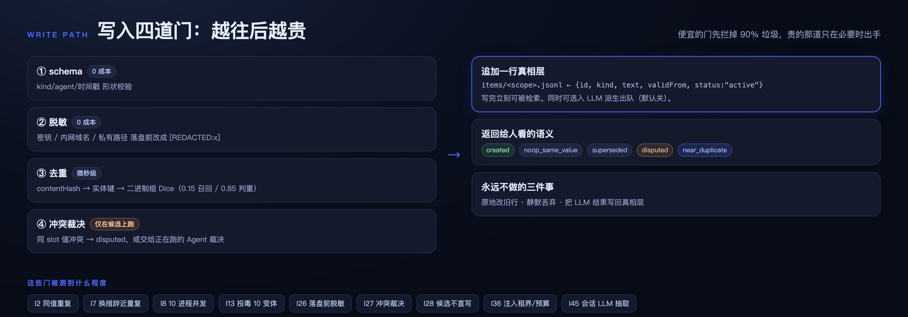
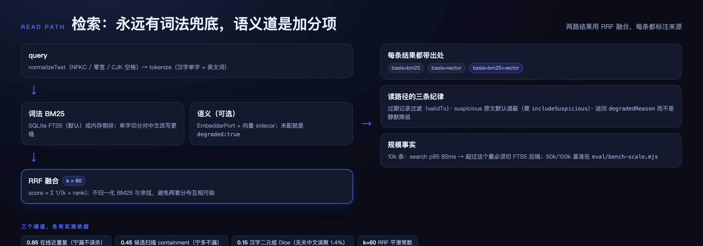
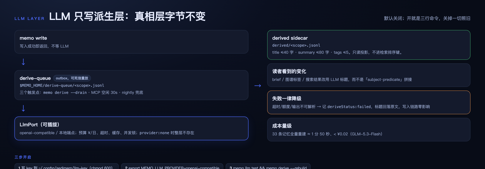
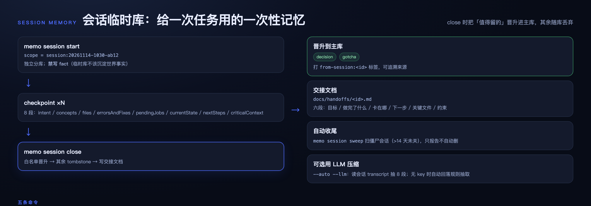
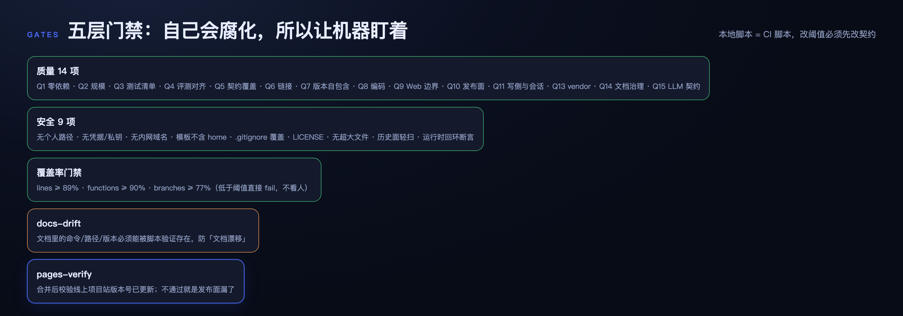
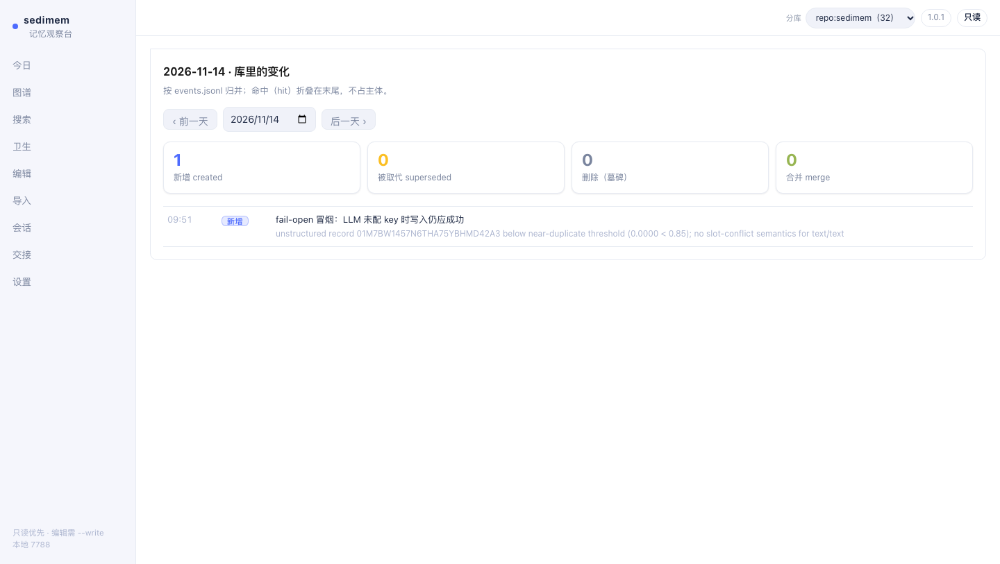
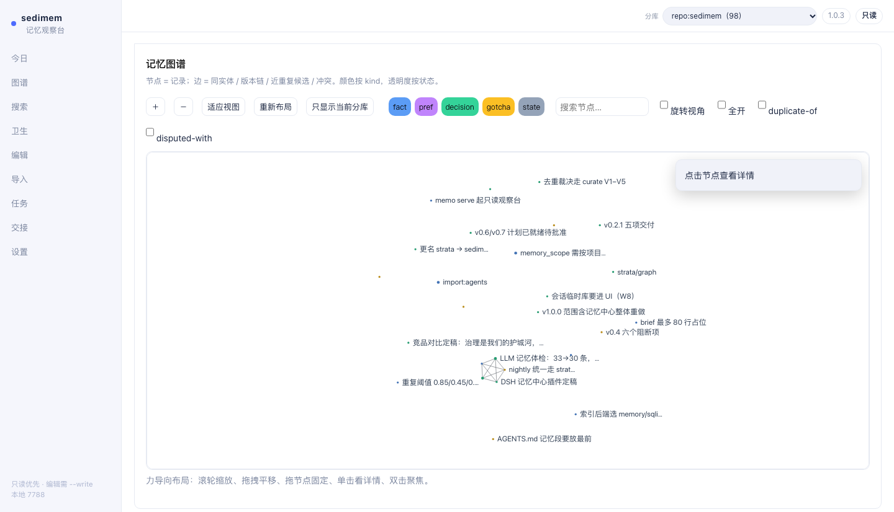
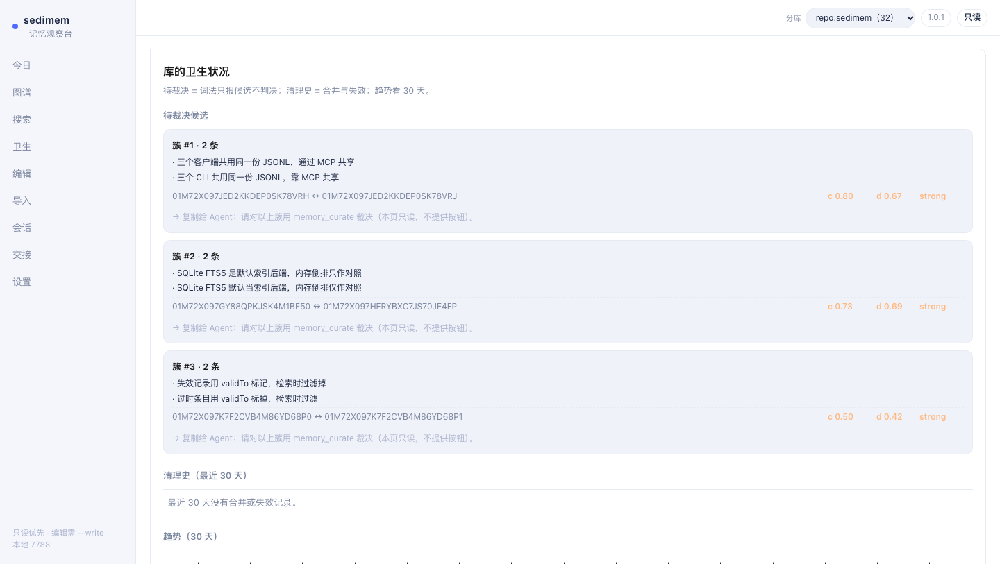

sedimem.
Local-first personal AI memory: an append-only truth layer; everything else is rebuildable.
648tests
0runtime deps
12modules
v1.0.2current

System Architecture

Four Write Gates

Dual-Channel Read

LLM Derivation

Session Store

memo session start
memo session checkpoint
memo session close
Five-Layer Gates

Memory Center



Nine pages: Today / Graph / Search / Hygiene / Edit / Import / Session / Handoff / Settings. Start with memo serve --port 7788; add --write to enable editing.
Three Clients
All three clients share one stdio MCP (10 memory_* + 5 memory_session_* tools) and one MEMO_HOME.
# DSH: ~/.dsh/profiles/<profile>/cordis.patch.yml
- insert:
- id: memory-sedimem
name: '@deepseek-ai/dsh-mcp-client'
config:
serverName: memo
transport: stdio
command: /opt/homebrew/bin/node
args: ['/ABS/PATH/versions/v1.0/src/mcp/server.js']
env: { MEMO_HOME: '$HOME/.memo' }
toolCallTimeoutMs: 15000# Codex CLI: ~/.codex/config.toml
[mcp_servers.memo]
command = "/opt/homebrew/bin/node"
args = ["/ABS/PATH/versions/v1.0/src/mcp/server.js"]
enabled = true
[mcp_servers.memo.env]
MEMO_HOME = "$HOME/.memo"# Claude Code
claude mcp add --scope user memo -e MEMO_HOME=$HOME/.memo -- \
/opt/homebrew/bin/node /ABS/PATH/versions/v1.0/src/mcp/server.jsVersion Timeline
- v0.1 Truth layer + BM25 + gates
- v0.2 Read-only console + versioning
- v0.3 Layered views + injection tiers
- v0.4 Semantic channel + sanitization
- v0.5 DSH plugin + pages-verify
- v0.6 Session store + bulk import
- v1.0 12-module refactor + center
- v1.0.1 Graph usability + colors
- v1.0.2 Thinking / rebuild / lazy fix
Rule: X.Y gets a new directory (currently versions/v1.0), X.Y.Z patches in place; current version v1.0.2.
中文 · English
This is the English version; the Chinese page is authoritative.